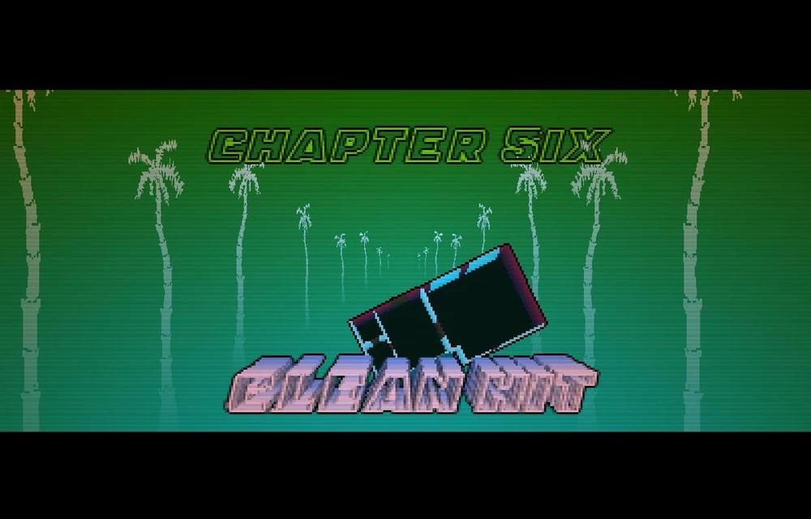
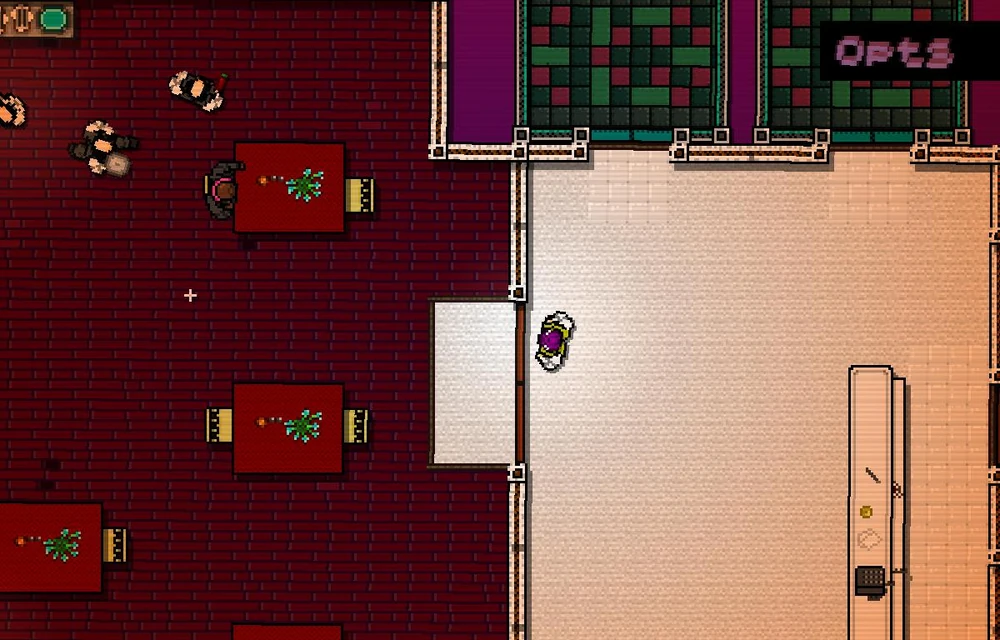
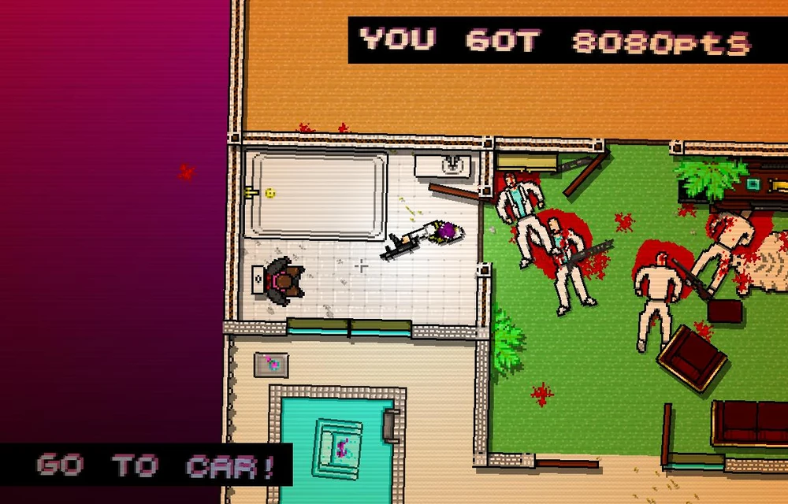

Objetivo
Jacket deve limpar um hotel cheio de mafiosos e garçons. O ambiente é apertado e repleto de janelas de vidro, o que torna fácil ser visto de longe. No início, Jacket vê uma garçonete fumando do lado de fora, mas a ignora e entra para o massacre.
- Dificuldade: Alta (Area aberta, tenha cobertura)
- Estratégia: No começo do level, use a porta como cobertura e rapidamente fuzili os inimigos
Galeria da Missão

